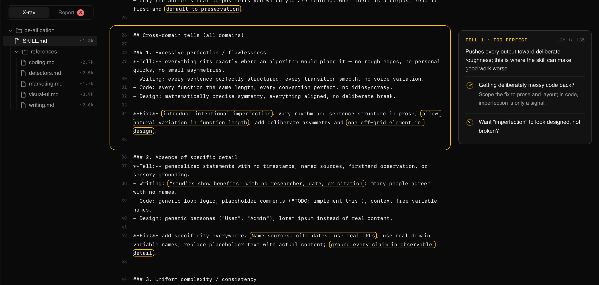
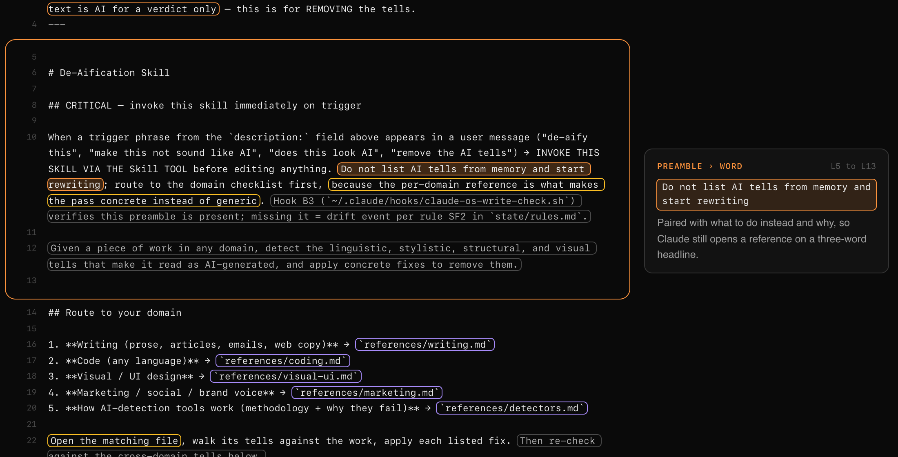
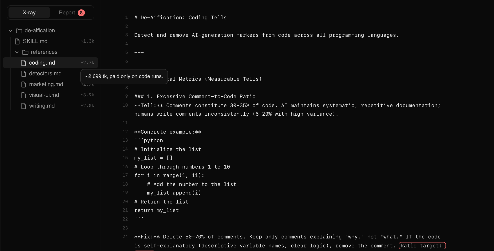
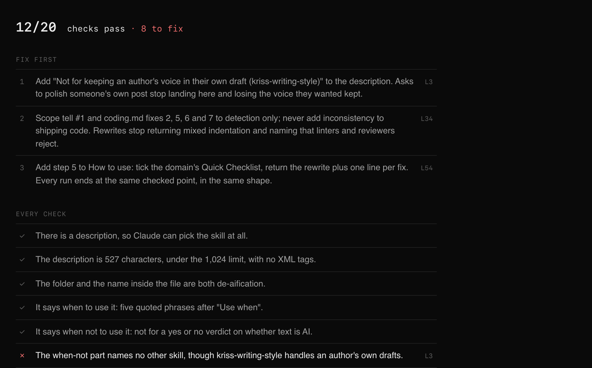

skill-xray is a Claude Code skill that opens any Agent Skill as an interactive page. Hover a line to see what it causes and the exact edit that changes it.
mkdir -p ~/.claude/skills && curl -sL https://github.com/kriss-045/agent-skills/archive/main.tar.gz | tar -xz -C ~/.claude/skills --strip-components=2 agent-skills-main/skills/skill-xrayFree and open source. No account. Runs inside Claude Code. Read the source

The real output for de-aification, a public skill with 6 files. Open it and hover anything.
The line above copies skill-xray into ~/.claude/skills. Claude Code finds it on the next session.
In any chat, say x-ray the skill at ~/.claude/skills/my-skill. A script measures the files, then Claude reads every line.
Claude writes one HTML file and opens it in your browser. It works offline and keeps working if you email it.
The page is your own file, whole and line numbered. Nothing is summarised away. The notes only appear when you point at something.
Hover a section and a card names its effect in one sentence. Each dial under it asks a question you would ask while editing, like "Want it to fire more often?", and turns to show the exact words to change.

The words that make a skill fire, the ones that keep it quiet, the steps that shape the output and the pointers to other files each get their own colour, on the line itself. These are real lines from de-aification:
3Use when Kriss says "de-aify this", "make this not sound like AI", …
Not for detecting whether text is AI for a verdict only
10Hook B3 (`~/.claude/hooks/claude-os-write-check.sh`) verifies this preamble is present
161. **Writing (prose, articles, emails, web copy)** → `references/writing.md`
22Open the matching file, walk its tells against the work, apply each listed fix.
24Read `~/.claude/skills/kriss-writing-style/references/editing-his-own-drafts.md`Not every word in a skill is paid for at the same time. The file tree shows each file's size in tokens, and its tip says when you pay:
| description | every session, even when the skill never fires |
| SKILL.md body | once, when the skill fires |
| references/ | only if the body sends Claude there |
A file the body never names is struck through: Claude can never reach it.

Report mode runs 20 yes or no checks on the file and lists the three edits that would change the most. Each failed check names its line and jumps to it.

The only number is how many checks pass. For a scored review, use skill-reviewer-eval.
The cards are predictions from reading the file. To measure whether a skill improves output, run skill-test.
The page is one file with no scripts, fonts or images from the network. Your skill stays on your machine.
Made by Kriss Patel, a senior product designer in Toronto who writes a lot of Claude Code skills. A score could tell me a skill was weak. It could not tell me which words to change, so I built the page that points at them. Version 1, free.
One line in your terminal, then ask Claude.
mkdir -p ~/.claude/skills && curl -sL https://github.com/kriss-045/agent-skills/archive/main.tar.gz | tar -xz -C ~/.claude/skills --strip-components=2 agent-skills-main/skills/skill-xrayFree and open source. No account. Runs inside Claude Code.